2. Поворот координатных осей
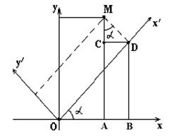
Выведем формулу преобразования координат при повороте
координатных осей.
Повернём оси координат на угол  относительно
исходной системы координат. Координаты точки
относительно
исходной системы координат. Координаты точки  в
системе координат 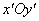 равны
в
системе координат 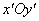 равны  и
и  .
Найдём её координаты в системе координат
.
Найдём её координаты в системе координат  .
В треугольнике 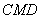: 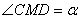, 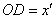,
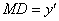.
.
В треугольнике 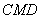: 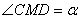, 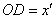,
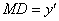.
относительно
исходной системы координат. Координаты точки в
системе координат 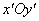 равны и .
Найдём её координаты в системе координат .
В треугольнике 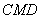: 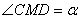, 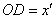,
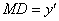. Следовательно,
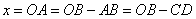,
 .
.Поскольку
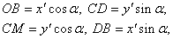
то
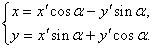
Выражение старых
координат (x,y) произвольной точки М через новые
координаты (x¢,y¢) этой же точки при повороте осей на
угол a.
(3)
Эти формулы выражают старые координаты  произвольной точки через новые координаты
произвольной точки через новые координаты  этой же точки при повороте осей на
угол .
этой же точки при повороте осей на
угол .
произвольной точки через новые координаты этой же точки при повороте осей на
угол .Формулы, выражающие новые координаты точки через
её старые координаты , получим из следующих
соображений: если новая система получена поворотом старой на угол , то старая система получается
поворотом новой на угол  , поэтому в равенствах
(3) можно поменять местами старые и новые координаты, заменяя одновременно на .
, поэтому в равенствах
(3) можно поменять местами старые и новые координаты, заменяя одновременно на .
точки через
её старые координаты , получим из следующих
соображений: если новая система получена поворотом старой на угол , то старая система получается
поворотом новой на угол , поэтому в равенствах
(3) можно поменять местами старые и новые координаты, заменяя одновременно на .Выполнив это преобразование, получим
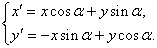
Выражение новых
координат (x¢,y¢) произвольной точки М через
старые координаты (x,y)
этой же точки при повороте осей на угол a.
При этом, например, уравнения директрис эллипса
(гиперболы) и параболы принимают вид:
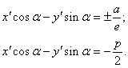
Уравнения
директрис эллипса (гиперболы) и параболы при повороте осей на угол a.